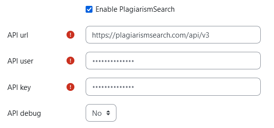
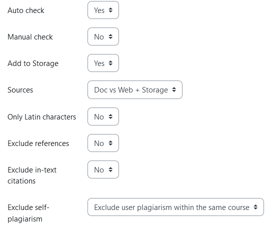
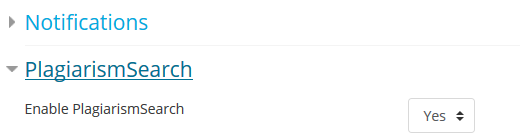
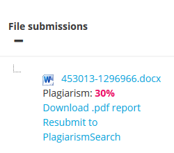
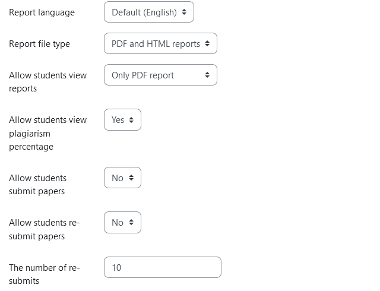

PlagiarismSearch Moodle Integration: Installation & Setup
Connect PlagiarismSearch to Moodle Assignments so file and online-text submissions can be sent for plagiarism checking directly from the Moodle workflow.
Administrators can configure automatic checking, Web and Storage comparison sources, report access, student permissions, and optional AI detection from the PlagiarismSearch plugin settings.
Current compatibility: Moodle 2.7–5.2 · Moodle Assignment (mod_assign) only
Need help with an institutional Moodle deployment? Contact our team.
Moodle Integration at a Glance
The PlagiarismSearch plugin works inside the Moodle Assignment workflow and lets administrators control when submissions are checked, which comparison sources are used, what report access is available, and which options students can use.
- Moodle versions
- 2.7–5.2
- Supported activity
- Moodle Assignment (mod_assign)
- Submission types
- File submissions and online text
- Automatic checking
- Available for file and online-text submissions
- Manual checking
- Available for file submissions, subject to permissions and settings
- Comparison sources
- Web, Storage, or Web + Storage
- AI detection
- Optional separate setting
- Reports
- PDF, HTML, or both
- API credentials
- API User + API Key from your PlagiarismSearch account
On this page
Before You Install the Moodle Plugin
Before starting the setup, make sure you have administrator access to the Moodle site and access to the API credentials in your PlagiarismSearch account.
Moodle also requires plagiarism prevention to be enabled at the site level before plagiarism plugins can be used. In current Moodle documentation, this setting is available under Site administration → Advanced features → Enable plagiarism plugins.
- Moodle administrator access
- Required to enable plagiarism prevention, install the plugin, and configure site-wide settings.
- Supported Moodle version
- Your installation should be within the currently supported Moodle 2.7–5.2 range.
- PlagiarismSearch account
- Required to obtain the API User and API Key used by the plugin.
- Moodle Assignment workflow
- The current confirmed integration supports Moodle Assignments only.
How the Moodle Integration Works
PlagiarismSearch uses Moodle’s plagiarism-plugin workflow. Once the plugin is installed and connected, site-wide settings can provide the default checking behavior, while supported settings can also be configured for individual Moodle Assignments.
-
1
Enable plagiarism prevention
Turn on Moodle’s plagiarism-plugin feature at the site level.
-
2
Install PlagiarismSearch
Download the current plugin and install it through Moodle administration.
-
3
Connect your account
Enter the API credentials available in your PlagiarismSearch account.
-
4
Set your defaults
Choose checking mode, comparison sources, report options, AI detection, and student permissions.
-
5
Enable it for an Assignment
Configure PlagiarismSearch in the Moodle Assignment where submissions should be checked.
When Assignment-level settings are not stored, the plugin falls back to the corresponding site-wide settings. This lets administrators define defaults while still allowing Assignment-specific configuration where permitted.
- Moodle Assignment
- File / online-text submission
- PlagiarismSearch check
- Similarity / optional AI result
- Report links and permitted student/teacher actions
Install the PlagiarismSearch Plugin in Moodle
Use the current plugin package from Moodle Marketplace or the official PlagiarismSearch GitHub repository. Moodle menu wording can vary slightly between versions, but the installation flow remains the same.
-
1
In Moodle, go to Site administration → Advanced features and enable plagiarism plugins.
-
2
Download the current PlagiarismSearch plugin ZIP from Moodle Marketplace or the official GitHub releases page.
-
3
In Moodle, open Site administration → Plugins → Install plugins.
-
4
Upload the PlagiarismSearch ZIP package and follow Moodle’s installation prompts.
-
5
After installation, open the PlagiarismSearch plugin settings under Moodle site administration.
-
6
Enable PlagiarismSearch and enter the connection details described in the next section.
-
7
Save the settings and confirm that Moodle can connect to the PlagiarismSearch API.
Connect Moodle to Your PlagiarismSearch Account
Sign in to PlagiarismSearch and open the API section of your account. Your API User and API Key are available there.
In the Moodle PlagiarismSearch settings, enter those values in the corresponding API user and API key fields. The current plugin also contains an API URL field for the service endpoint.
Save the settings after entering your credentials.
Moodle · plugin settings

Security note
Keep your API Key private. Do not place it in screenshots, public documentation, support tickets visible to third parties, or other publicly accessible content.
If PlagiarismSearch cannot validate the connection while the plugin is being enabled, check the API connection values and save the settings again.
Configure PlagiarismSearch Settings
PlagiarismSearch separates connection settings from checking, comparison, reporting, and student-access controls. Site-wide values act as defaults for Moodle Assignments unless an Assignment-specific value has been saved.
Group 1 — Connection
- Enable PlagiarismSearch
- Turns the PlagiarismSearch plugin on at the site level. The integration must also be enabled for the Assignment where you want to use it.
- API url
- Defines the PlagiarismSearch API endpoint used by the plugin.
- API user
- Your PlagiarismSearch API user value.
- API key
- Your PlagiarismSearch API key.
- API debug
- Advanced connection/debugging setting. Leave this at the standard configuration unless PlagiarismSearch support instructs you to change it.
Group 2 — Checking behavior
- Auto check
- Automatically sends supported Moodle Assignment submissions for checking after the relevant submission event. This applies to Assignment file submissions and online text.
- Manual check
- Enables manual submission and resubmission controls for supported file submissions when the user has the required permission. Student access also depends on the student settings below.
Choose What to Compare — and What to Store
Sources and Add to Storage are separate controls. One decides where a submission is compared; the other decides whether the new submission is added to PlagiarismSearch Storage.
Control 1 · where it is compared
Sources
- Doc vs Web + Storage
- Doc vs Web
- Doc vs Storage
Control 2 · whether it is kept
Add to Storage
Yes / No — set separately from Sources.
- Doc vs Web + Storage
- Compare the submitted content against both Web sources and the configured PlagiarismSearch Storage.
- Doc vs Web
- Compare the submitted content against Web sources without using Storage as a comparison source.
- Doc vs Storage
- Compare the submitted content against Storage without using Web sources for that check.
Add to Storage
Add to Storage controls whether the submitted content is added to Storage for future comparisons. Searching Storage does not by itself mean that the current submission will be added to Storage. Likewise, adding a submission to Storage is separate from deciding whether Storage will be searched during the current check.
Moodle · plugin settings

Refine the Comparison
- Only Latin characters
- Applies the plugin’s character-substitution filter during the search. It is intended to help identify character replacements that can affect text matching.
- Exclude references
- Excludes detected reference-list content from the similarity calculation when the filter is enabled.
- Exclude in-text citations
- Excludes qualifying in-text citation content from the similarity calculation when the filter is enabled.
- Exclude self-plagiarism
- Changes how Storage comparisons involving the same user and/or course are filtered. This setting is relevant when Storage is used as a comparison source.
Self-comparison options
- No — do not apply a same-user/course exclusion.
- Exclude user plagiarism within the same course — filter matching Storage content associated with the same user in the same course.
- Exclude user plagiarism — filter matching Storage content associated with the same user.
- Exclude course plagiarism — filter matching Storage content associated with the same course.
Optional AI Detection
Detect AI is a separate setting from plagiarism detection. Enable it when you also want the PlagiarismSearch check to request an AI-related result.
When an AI result is available, Moodle can display it separately from the plagiarism/similarity result.
AI-generated text is not automatically plagiarism, and the two signals should be interpreted separately.
Configure Report Access
- Report language
- Selects the language used when a supported report language is requested.
- Report file type
- Controls whether Moodle provides no report link, a PDF report, an HTML report, or both.
- Allow teachers review reports
- Enables the additional teacher review-report link when the user has the required permission.
Current report-language options: Default (English), English, Spanish, Ukrainian, Polish, and Russian.
Configure PlagiarismSearch for a Moodle Assignment
Supported activity
The current PlagiarismSearch Moodle integration supports the Assignment (mod_assign) activity only. It does not currently provide the confirmed PlagiarismSearch workflow for Moodle Workshop, Forum, or Quiz activities.
Create a new Moodle Assignment or edit an existing one. In the Assignment settings, find the PlagiarismSearch section and enable the integration.
Supported checking and report settings can then use the site-wide defaults or be saved specifically for that Assignment. This allows administrators to establish a standard configuration while still supporting Assignment-level requirements where course configuration is permitted.
Moodle · Assignment settings

Admin governance note
If Only administrators can configure course settings is enabled at the site level, Assignment-level PlagiarismSearch configuration is restricted accordingly.
File and online-text submissions are not identical workflows
Automatic checking supports both Assignment file submissions and online text. The current manual Submit to PlagiarismSearch / Resubmit to PlagiarismSearch workflow is file-based.
| Checking mode | File submission | Online text |
|---|---|---|
| Auto check | Supported | Supported |
| Manual Submit / Resubmit | Supported, subject to permissions and settings | Not part of the current workflow — file-based |
URL Parsing for Online Text
The plugin also includes an Allow URL parsing in text option.
When URL parsing is enabled, the plugin can use the configured Valid URLs list for parsing to define which URLs are allowed for that workflow.
Keep the allowed URL list limited to services and domains your institution intentionally supports.
- Allow URL parsing in textAssignment level, where available
- Valid URLs list for parsingSite level, administrator-maintained
What Happens After a Student Submits Work
If Auto check is enabled, PlagiarismSearch listens for supported Moodle Assignment submission events and sends the submitted file or online text for checking.
For file submissions, Manual check can provide a Submit to PlagiarismSearch action when the current user has permission to use it. A completed file can also expose Resubmit to PlagiarismSearch when resubmission is allowed.
While a report is being processed, Moodle can show an In progress status and a Check status link.
After processing is complete, Moodle can display the returned percentage and the report links enabled by your configuration. If AI detection was enabled and an AI result was returned, the AI value is shown separately.
Moodle · Assignment grading

Interpretation note
A similarity result identifies matching content that should be reviewed in context. It should not be treated as an automatic determination that plagiarism or academic misconduct occurred.
Control What Students Can See and Do
Student access is configurable. Administrators can determine whether students can see report links, view the returned percentage, manually submit eligible files, or resubmit them after revision.
- Allow students view reports
- Select whether students receive no report link, PDF, HTML, or both supported report formats.
- Allow students view plagiarism percentage
- Controls whether students can see the returned percentage in Moodle.
- Allow students submit papers
- Allows students to manually submit eligible file submissions when Manual check is enabled.
- Allow students re-submit papers
- Allows students to manually resubmit eligible files after a previous completed check when Manual check is enabled.
- The number of re-submits
- Limits the number of permitted student resubmissions when a limit is configured.
- Student disclosure
- Defines the disclosure text shown to students when the plugin is enabled.
Important: student permissions do not override the overall checking mode. Enabling student submission does not create a manual submission action unless Manual check is also enabled.
Moodle · plugin settings

Troubleshooting Moodle Integration
- PlagiarismSearch does not appear in the Assignment
- Recommended checkConfirm that Moodle plagiarism plugins are enabled, the PlagiarismSearch plugin is installed and enabled, and you are configuring a Moodle Assignment.
- The plugin cannot be enabled successfully
- Recommended checkRecheck the API URL, API User, and API Key. The plugin validates the API connection when it is enabled.
- An online-text submission has no manual Submit button
- Recommended checkThis is expected in the current implementation. Use Auto check for the online-text submission workflow.
- A file has no manual Submit or Resubmit action
- Recommended checkCheck Manual check, user capability, and the applicable student submit/resubmit settings.
- A student cannot see the result
- Recommended checkCheck Allow students view reports and Allow students view plagiarism percentage.
- The result is still processing
- Recommended checkUse Check status while the report remains In progress.
- Storage behavior is not what you expected
- Recommended checkCheck both Sources and Add to Storage. They control different behaviors.
Moodle Integration FAQ
Yes. PlagiarismSearch provides a Moodle plagiarism plugin for the Moodle Assignment workflow. The current confirmed compatibility range is Moodle 2.7–5.2.
The current confirmed PlagiarismSearch integration supports Moodle Assignment (mod_assign) only. Do not assume support for Workshop, Forum, Quiz, or other Moodle activities unless a later plugin release explicitly adds them.
Yes. Automatic checking supports Moodle Assignment file submissions and online-text submissions. The current manual Submit/Resubmit workflow is file-based.
Sign in to your PlagiarismSearch account and open the API section. The API User and API Key used by the Moodle plugin are available there.
Yes. Enable Auto check in the PlagiarismSearch settings. For supported Moodle Assignment submissions, the plugin can automatically send new file and online-text submissions for checking.
Yes. The Sources setting can use Web, Storage, or Web + Storage. Searching Storage is separate from Add to Storage, which controls whether a new submission is added to Storage for future comparisons.
The plugin has a separate Detect AI option. When it is enabled, an AI-related result can be requested and displayed separately from the plagiarism/similarity result. AI detection and plagiarism detection are not the same analysis.
The current plugin can provide PDF reports, HTML reports, both formats, or no report link, depending on the selected settings. A separate teacher review link can also be enabled.
Yes, if the administrator allows it. Student report access and percentage visibility are separate settings, so institutions can control what students can see.
Yes, for eligible file submissions when Manual check and student resubmission are enabled. Administrators can also configure a resubmission limit.
No. Storage behavior is configurable. Add to Storage controls whether a submitted document is added to Storage, while Sources controls whether Storage is searched during a check.
Need Help with Your Moodle Setup?
This guide covers the standard PlagiarismSearch Moodle installation and configuration workflow.
If you need help with API access, institutional deployment, account configuration, or a Moodle setup that requires additional technical review, contact the PlagiarismSearch team.